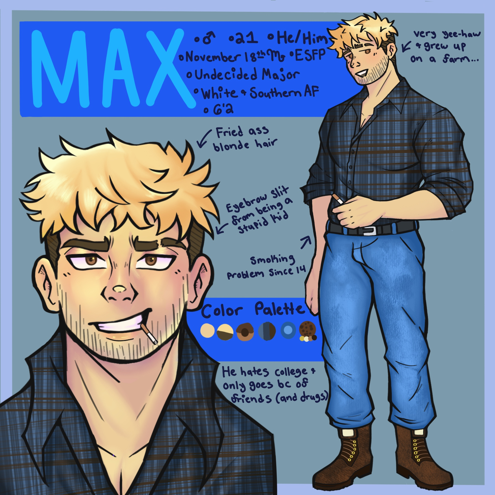

Projects
Original Character Commission
My client provided me with the features and details of their original characters, and I brought them to life through my art.
Character Commission
My client thought Reaper from Overwatch would look great in my style, so they decided to commission me.

Video Edit Commission
After seeing one of my other edits on TikTok, my client decided to commission me to create an edit of Ellie from The Last of Us set to the song "wutiwant."